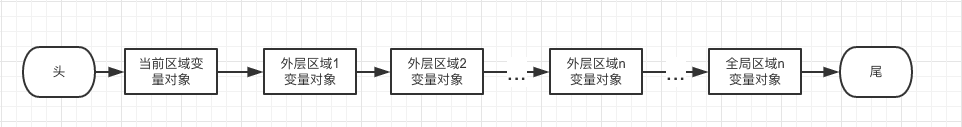
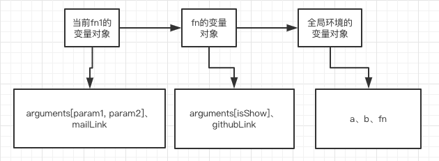
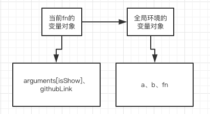
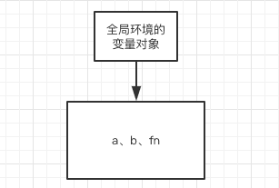

浅析JavaScript作用域链
前言
为可以大概了解作用域链是个什么东西，本文着重说明作用域链，尽量不引入其他的概念。
变量对象
在说作用域链前，先简单地说明变量对象，毕竟是作用域链的核心组成。每个函数内部都会定义变量，会定义函数，在全局环境下也会定义函数、变量。对应的区域都会有一个特殊对象，这个对象就会存放对应区域的变量、函数，这个特殊的对象就是变量对象。所以说全局环境有和全局环境对应的变量对象，每个函数内部也有一个与之对应的变量对象，不如下面的代码：
1 | <script> |
上面的代码中,
- 全局环境的变量对象存储的是：a, b, fn
- fn函数的变量对象存储的是：isShow，gihubLink；你可以看见，fn函数的变量对象没有包含全局环境定义的变量和函数
作用域链
为什么要说变量对象呢？因为作用域链就是由变量对象组成，作用域链是一个由变量对象组成的列表，一个有序，只能由头开始逐个往尾访问的列表（说是列表其实更应该说是链表，先不要在意这个概念）。
并且作用域链和变量对象有一个共同的特点：每个区域都会有一个与之对象对的。比如说上面的代码中，全局环境有一个与之对应的变量对象，也有一个和全局环境对应的作用域链；fn函数也是如此。
那么作用域链是有哪些变量对象组成呢？
我们先看下图：
由上图应该可以看出，作用域链由当前区域的变量对象作为开头，然后是逐层往外直至全局环境的变量对象组成如上图一样的列表，这就是作用域链，并且如上文所说，每个区域都有这样一个与之对应的作用域链。比如下面的代码：
1 | <script> |
fn1函数的作用域链：
fn的作用域链：
全局环境的作用域链

那么作用域链的作用是什么？
jser都应该有这样的体验，在函数内部可以访问到外部区域的变量和函数，而在外部区域访问不了函数内定义的变量：
1 | <script> |
如上所示，fn函数内部可以访问到外层区域（全局环境）的变量，为什么可以，就是因为fn函数的作用域链，在变量调用的时候（在fn就是访问c变量的时候），会在当前作用域链的头部开始往尾部，依次在变量对象中查询对应的变量，找到即返回，不再继续查询，这个也是内层同名变量比外层同名变量优先级更高的原因，这个查询的过程叫做变量解析，也叫标识符解析，console.log(c);会抛出异常就是因为全局环境的作用域链中的变量对象没有该变量。
结语
正如本文开头所说，本文仅是浅析作用域链，一些相关概念都被隐掉了，比如说上文说的“区域“，应该说是作用域或执行环境，这两个概念其实说的不是很明确，比如说执行环境，在《javascript高级程序设计》的4.2中有说到，简直堪称极具迷惑性，标题更加是醉”执行环境和作用域“，然而基本没有谈到作用域。作用域在《javascript权威指南》的3.10中倒是说的挺多，还分变量作用域和函数作用域。不过啊，要是拘泥于这些细节更加难搞明白作用域链了。上文也说道作用域链更像链表，个人也是这样认为，但两书中都没有明确地说是，权威指南倒是提了一下，而且作用域链也是很符合链表的特点，如果不了解链表，但由不了解其他语言，推荐这本书《数据结构与算法JavaScript描述》，吐槽完毕，作用域链的解析当然没有那么浅显，想了解更多细节还是自己去看看书。
有说得不对的，欢迎指出